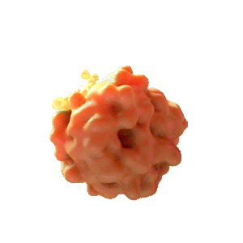
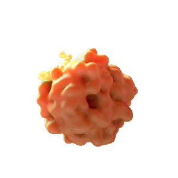

"TACKLING CHRONIC LIVER DISEASE:
NASH, Hepatitis, Cirrhosis, Liver
Failure, and Cancer."
"Hepion Pharmaceuticals is a clinical stage biopharmaceutical company
focused on Artificial Intelligence driven therapeutic drug development for the treatment of non-alcoholic
steatohepatitis, fibrotic diseases, hepatocellular carcinoma (“HCC”), and other chronic diseases."
Pre-Clinical & Clinical Trials
Status: In-Progress
Summary: Evaluate the safety, tolerability, and efficacy of Rencofilstat in adult patients with NASH and Advanced Liver Fibrosis.
Details: Enrollment of 336 pacticipants, each cohort consists of 84 patients with biopsy proven NASH F2/F3. Patients will be dose in a 1:1:1:1 ratio between Rencofilstat 75mg, 150mg, 225mg, and matching placebo. The duration of dosing will be 1 year with 1 month observation and follow up period.
Endpoints: Efficacy, superiority of Rencofilstat compared to placebo and assessing the proportion of patients with improvement in fibrosis OR NASH resolution without worsening of fibrosis.
Status: In-Progress
Collaboration: HepQuant
Summary: Evaluate the safety, tolerability, and efficacy of Rencofilstat in adult patients with NASH F3.
Details: Enrollment of 60 participants, each cohort consists of 20 patients classified as NASH F2/F3 based on either historical biopsy or by using AGILE 3+ criteria. Patients will be dose in a 1:1:1 ratio between Rencofilstat 75mg, 150mg, and 225mg. The duration of dosing will be 120 days with follow up period of 14 days.
The study will use HepQuant's SHUNT test, which provides sensitive measurement of hepatic function and detailed information on the role Rencofilstat plays in liver health in NASH patients with advance fibrosis. The SHUNT test will be performed at days 1, 60, and 120.
Endpoints: Efficacy - HepQuant SHUNT, Safety, Tolerability, and Pharmacokinetics.

 
